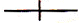
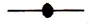
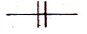
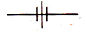
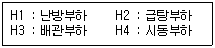

에너지관리기능사 (2012-10-20 기출문제)
1과목: 임의 구분
1. 보일러 자동제어에서 3요소식 수위제어의 3가지 검출요소와 무관한 것은?
- 노내 압력
- 수위
- 증기유량
- 급수유량
(정답률: 83%)

2. 다음 부품 중 전후에 바이패스를 설치해서는 안 되는 부품은?
- 급수관
- 연료차단밸브
- 감압밸브
- 유류배관의 유량계
(정답률: 71%)
3. 피드백 제어를 가장 옳게 설명한 것은?
- 일정하게 정해진 순서에 의해 행하는 제어
- 모든 조건이 충족되지 않으면 정지되어 버리는 제어
- 출력측의 신호를 입력측으로 되돌려 정정 동작을 행하는 제어
- 사람의 손에 의해 조작되는 제어
(정답률: 85%)
4. 메탄(CH4) 1Nm3 연소에 소요되는 이론공기량이 9.52Nm3이고, 실제공기량이 11.43Nm3 일 때 공기비(m)는 얼마인가?
- 1.5
- 1.4
- 1.3
- 1.2
(정답률: 67%)
5. 세정식 집진장치 중 하나인 회전식 집진장치의 특징에 관한 설명으로 틀린 것은?
- 가동부분이 적고 구조가 간단하다.
- 세정용수가 적게 들며, 급수 배관을 따로 설치할 필요가 없으므로 설치공간이 적게 든다.
- 집진물을 회수할 때 탈수, 여과, 건조 등을 수행할 수 있는 별도의 장치가 필요하다.
- 비교적 큰 압력손실을 견딜 수 있다.
(정답률: 66%)
6. 보일러 부속장치에 대한 설명 중 잘못된 것은?
- 인젝터 : 증기를 이용한 급수장치
- 기수분리기 : 증기 중에 혼입된 수분을 분리하는 장치
- 스팀 트랩 : 응축수를 자동으로 배출하는 장치
- 수트 블로우 : 보일러 동 저면의 스케일, 침전물을 밖으로 배출하는 장치
(정답률: 78%)
7. 저수위 등에 따른 이상온도의 상승으로 보일러가 과열되었을 때 작동하는 안전장치는?
- 가용 마개
- 인젝터
- 수위계
- 증기 헤더
(정답률: 63%)
8. 보일러용 연료 중에서 고체연료의 일반적인 주성분은? (단, 중량%를 기준으로 한 주성분을 구한다.)
- 탄소
- 산소
- 수소
- 질소
(정답률: 87%)
9. 연소의 3대 조건이 아닌 것은?
- 이산화탄소 공급원
- 가연성 물질
- 산소 공급원
- 점화원
(정답률: 88%)
10. 주철제 보일러인 섹셔널 보일러의 일반적인 조합 방법이 아닌 것은?
- 전후조합
- 좌우조합
- 맞세움조합
- 상하조합
(정답률: 71%)
11. 전기식 온수온도제한기의 구성 요소에 속하지 않는 것은?
- 온도 설정 다이얼
- 마이크로 스위치
- 온도차 설정 다이얼
- 확대용 링게이지
(정답률: 76%)
12. 보일러 통풍에 대한 설명으로 틀린 것은?
- 자연 통풍은 일반적으로 별도의 동력을 사용하지 않고 연돌로 인한 통풍을 말한다.
- 압입 통풍은 연소용 공기를 송풍기로 노 입구에서 대기압보다 높은 압력으로 밀어 넣고 굴뚝의 통풍작용과 같이 통풍을 유지하는 방식이다.
- 평형통풍은 통풍조절은 용이하나 통풍력이 약하여 주로 소용량 보일러에서 사용한다.
- 흡입통풍은 크게 연소가스를 직접 통풍기에 빨아들이는 직접 흡입식과 통풍기로 대기를 빨아들이게 하고 이를 이젝터로 보내어 그 작용에 의해 연소가스를 빨아들이는 간접흡입식이 있다.
(정답률: 85%)
13. KS에서 규정하는 육상용 보일러의 열정산 조건과 관련된 설명으로 틀린 것은?
- 보일러의 정상 조업상태에서 적어도 2시간 이상의 운전결과에 따른다.
- 발열량은 원칙적으로 사용 시 연료의 저발열량(진발열량)으로 하며, 고발열량(총발열량)으로 사용하는 경우에는 기존 발열량을 분명하게 명기해야 한다.
- 최대 출열량을 시험할 경우에는 반드시 정격부하에서 시험을 한다.
- 열정산과 관련한 시험 시 시험 보일러는 다른 보일러와 무관한 상태로 하여 실시한다.
(정답률: 56%)
14. 기체연료의 연소방식 중 버너의 연료노즐에서는 연료만을 분출하고 그 주위에서 공기를 별도로 연소실로 분출하여 연료가스와 공기가 혼합하면서 연소하는 방식으로 산업용 보일러의 대부분이 사용하는 방식은?
- 예증발 연소방식
- 심지 연소방식
- 예혼합 연소방식
- 확산 연소방식
(정답률: 63%)
15. 고압과 저압 배관사이에 부착하여 고압 측의 압력변화 및 증기 소비량 변화에 관계없이 저압 측의 압력을 일정하게 유지시켜 주는 밸브는?
- 감압밸브
- 온도조절밸브
- 안전밸브
- 플랩밸브
(정답률: 91%)
16. 보일러 급수처리의 목적으로 거리가 먼 것은?
- 스케일의 생성 방지
- 점식 등의 내면 부식 방지
- 캐리오버의 발생 방지
- 황분 등에 의한 저온부식 방지
(정답률: 72%)
17. 보일러의 분류 중 원통형 보일러에 속하지 않는 것은?
- 다쿠마 보일러
- 랭카셔 보일러
- 캐와니 보일러
- 코르니시 보일러
(정답률: 73%)
18. 보일러에서 C중유를 사용할 경우 중유예열장치로 예열할 때 적정 예열 범위는?
- 40℃~45℃
- 80℃~1⑤℃
- 130℃~160℃
- 200℃~250℃
(정답률: 72%)
19. 어떤 액체 1200kg 을 30℃에서 100℃까지 온도를 상승시키는데 필요한 열량은 몇 kcal 인가? (단, 이 액체의 비열은 3kcal/kg·℃이다.)
- 35000
- 84000
- 126000
- 252000
(정답률: 60%)
20. 매시간 1000kg의 LPG를 연소시켜 15000kg/h의 증기를 발생하는 보일러의 효율(%)은 약 얼마인가? (단, LPG의 총발열량은 12980kcal/kg, 발생증기엔탈피는 750kcal/kg, 급수엔탈피는 18kcal/kg 이다.)
- 79.8
- 84.6
- 88.4
- 94.2
(정답률: 60%)
2과목: 임의 구분
21. 보일러에서 발생하는 부식을 크게 습식과 건식으로 구분할 때 다음 중 건식에 속하는 것은?
- 점식
- 황화부식
- 알칼리부식
- 수소취화
(정답률: 56%)
22. 보일러의 점화조작 시 주의사항에 대한 설명으로 잘못된 것은?
- 연료가스의 유출속도가 너무 빠르면 역화가 일어나고, 너무 늦으면 실화가 발생하기 쉽다.
- 연료의 예열온도가 낮으면 무화불량, 화염의 편류, 그을음, 분진이 발생하기 쉽다.
- 유압이 낮으면 점화 및 분사가 불량하고 유압이 높으면 그을음이 축적되기 쉽다.
- 프리퍼지 시간이 너무 길면 연소실의 냉각을 초래하고, 너무 짧으면 역화를 일으키기 쉽다.
(정답률: 68%)
23. 보일러 작업종료시의 주요점검 사항으로 틀린 것은?
- 전기의 스위치가 내려져 있는지 점검한다.
- 난방용 보일러에 대해서는 드레인의 회수를 확인하고 진공펌프를 가동시켜 놓는다.
- 작업종료 시 증기압력이 어느 정도인지 점검한다.
- 증기밸브로부터 누설이 없는지 점검한다.
(정답률: 82%)
24. 보일러 급수 중의 현탁질 고형물을 제거하기 위한 외처리 방법이 아닌 것은?
- 여과법
- 탈기법
- 침강법
- 응집법
(정답률: 63%)
25. 보일러설치기술규격(KBI)에 따라 열매체유 팽창탱크의 공간부에는 열매체의 노화를 방지하기 위해 N2가스를 봉입하는데 이 가스의 압력이 너무 높게 되지 않도록 설정하는 팽창탱크의 최소체적(VT)을 구하는 식으로 옳은 것은? (단, VE는 승온 시 시스템 내의 열매체유 팽창량(L)이고, VM은 상온 시 탱크내 열매체유 보유량(L)이다.)
- VT =VE＋2VM
- VT=2VE＋VM
- VT=2VE＋2VM
- VT=3VE＋VM
(정답률: 75%)
26. 수관식 보일러의 일반적인 특징이 아닌 것은?
- 구조상 저압으로 운용되어야 하며 소용량으로 제작해야 한다.
- 저열면적을 크게 할 수 있으므로 열효율이 높은 편이다.
- 급수 처리에 주의가 필요하다.
- 연소실을 마음대로 크게 만들 수 있으므로 연소상태가 좋으며 또한 여러 종류의 연료 및 연소 방식이 적용된다.
(정답률: 71%)
27. 다음 중 자동연료차단장치가 작동하는 경우로 거리가 먼 것은?
- 버너가 연소상태가 아닌 경우(인터록이 작동한 상태)
- 증기압력이 설정압력보다 높은 경우
- 송풍기 팬이 가동할 때
- 관류보일러에 급수가 부족한 경우
(정답률: 77%)
28. 섭씨온도(℃), 화씨온도(°F), 캘빈온도(K), 랭킨온도(°R)와의 관계식으로 옳은 것은?
- ℃=1.8×(°F-32)
- ℉=(℃＋32)/1.8
- K=(5/9)×°R
- °R=K×(5/9)
(정답률: 61%)
29. 환산 증발 배수에 관한 설명으로 가장 적합한 것은?
- 연료 1[kg]이 발생시킨 증발능력을 말한다.
- 보일러에서 발생한 순수 열량을 표준 상태의 증발잠열로 나눈 값이다.
- 보일러의 전열면적 1[m2]당 1시간 동안의 실제 증발량이다.
- 보일러 전열면적 1[m2]당 1시간 동안의 보일러 열출력이다.
(정답률: 43%)
30. 유류 보일러 시스템에서 중유를 사용할 때 흡입측의 여과망 눈 크기로 적합한 것은?
- 1~10 mesh
- 20~60 mesh
- 100~150 mesh
- 300~500 mesh
(정답률: 78%)
31. 원통형 보일러의 일반적인 특징 설명으로 틀린 것은?
- 보일러 내 보유 수량이 많아 부하변동에 의한 압력 변화가 적다.
- 고압 보일러나 대용량 보일러에는 부적당하다.
- 구조가 간단하고 정비, 취급이 용이하다.
- 전열면적이 커서 증기 발생시간 짧다.
(정답률: 51%)
32. 다음 중 과열기에 관한 설명으로 틀린 것은?
- 연소방식에 따라 직접연소식과 간접연소식으로 구분된다.
- 전열방식에 따라 복사형, 대류형, 양자병용형으로 구분된다.
- 복사형 과열기는 관열관을 연소실내 또는 노벽에 설치하여 복사열을 이용하는 방식이다.
- 과열기는 일반적으로 직접연소식이 널리 사용된다.
(정답률: 62%)
33. 표준대기압 상태에서 0℃ 물 1kg이 100℃ 증기로 만드는데 필요한 열량은 몇 kcal 인가? (단, 물의 비열은 1kcal/kg·℃ 이고, 증발잠열은 539kcal/kg 이다.)
- 100
- 500
- 539
- 639
(정답률: 69%)
34. 다음 중 KS에서 규정하는 온수 보일러의 용량 단위는?
- N㎥ /h
- kcal/㎡
- kg/h
- kJ/h
(정답률: 46%)
35. 열사용기자재 검사기준에 따라 온수발생 보일러에 안전밸브를 설치해야 되는 경우는 온수온도 몇 ℃ 이상인 경우인가?
- 60℃
- 80℃
- 100℃
- 120℃
(정답률: 50%)
36. 지역난방의 일반적인 장점으로 거리가 먼 것은?
- 각 건물마다 보일러 시설이 필요 없고, 연료비와 인건비를 줄일 수 있다.
- 시설이 대규모이므로 관리가 용이하고 열효율 면에서 유리하다.
- 지역난방설비에서 배관의 길이가 짧아 배관에 의한 열손실이 적다.
- 고압증기나 고온수를 사용하여 관의 지름을 작게 할 수 있다.
(정답률: 74%)
37. 다음 보온재 중 유기질 보온재에 속하는 것은?
- 규조토
- 탄산마그네슘
- 유리섬유
- 코르크
(정답률: 66%)
38. 수면측정장치 취급상의 주의사항에 대한 설명으로 틀린 것은?
- 수주 연결관은 수측 연결관의 도중에 오물이 끼기 쉬우므로 하양경사하도록 배관한다.
- 조명은 충분하게 하고 유리는 항상 청결하게 유지한다.
- 수면계의 콕크는 누설되기 쉬우므로 6개월 주기로 분해 정비하여 조작하기 쉬운 상태로 유지한다.
- 수주관 하부의 분출관은 매일 1회 분출하여 수측 연결관의 찌꺼기를 배출한다.
(정답률: 60%)
39. 보일러 수리시의 안전사항으로 틀린 것은?
- 부식부위의 해머작업 시에는 보호안경을 착용한다.
- 파이프 나사절삭 시 나사 부는 맨손으로 만지지 않는다.
- 토치램프 작업 시 소화기를 비치해 둔다.
- 파이프렌치는 무거우므로 망치 대용으로 사용해도 된다.
(정답률: 94%)
40. 관이음쇠로 사용되는 홈 조인트(groove joint)의 장점에 관한 설명으로 틀린 것은?
- 일반 용접식, 플랜지식, 나사식 관이음 방식에 비해 빨리 조립이 가능하다.
- 배관 끝단 부분의 간격을 유지하여 온도변화 및 진동에 의한 신축, 유동성이 뛰어나다.
- 홈 조인트의 사용 시 용접 효율성이 뛰어나서 배관 수명이 길어진다.
- 플랜지식 관이음에 비해 볼트를 사용하는 수량이 적다.
(정답률: 54%)
3과목: 임의 구분
41. 어떤 건물의 소요 난방부하가 54600kcal/h이다. 주철제 방열기로 증기난방을 한다면 약 몇 쪽(section)의 방열기를 설치해야 하는가? (단, 표준방열량으로 계산하며, 주철제 방열기의 쪽당 방열면적은 0.24m2이다.)
- 330쪽
- 350쪽
- 380쪽
- 400쪽
(정답률: 69%)
42. 관의 결합방식 표시방법 중 유니언식의 그림기호로 맞는 것은?




(정답률: 83%)
43. 보일러에서 팽창탱크의 설치 목적에 대한 설명으로 틀린 것은?
- 체적팽창, 이상팽창에 의한 압력을 흡수한다.
- 장치 내의 온도와 압력을 일정하게 유지한다.
- 보충수를 공급하여 준다.
- 관수를 배출하여 열손실을 방지한다.
(정답률: 55%)
44. 열사용기자재 검사기준에 따라 전열면적 12㎡인 보일러의 급수밸브의 크기는 호칭 몇 A 이상이어야 하는가?
- 15
- 20
- 25
- 32
(정답률: 71%)
45. 다음 보온재 중 안전사용 (최고)온도가 가장 낮은 것은?
- 규산칼슘 보온판
- 탄산마그네슘 물반죽 보온재
- 경질 폼라버 보온통
- 글라스울 블랭킷
(정답률: 60%)
46. 배관의 나사이음과 비교하여 용접이음의 장점이 아닌 것은?
- 누수의 염려가 적다.
- 관 두께에 불균일한 부분이 생기지 않는다.
- 이음부의 강도가 크다.
- 열에 의한 잔류응력 발생이 거의 일어나지 않는다.
(정답률: 77%)
47. 파이프 축에 대해서 직각 방향으로 개폐되는 밸브로 유체의 흐름에 따른 마찰저항 손실이 적으며 난방 배관 등에 주로 이용되나 절반만 개폐하면 디스크 뒷면에 와류가 발생되어 유량 조절용으로는 부적합한 밸브는?
- 버터플라이 밸브
- 슬루스 밸브
- 글로브 밸브
- 콕
(정답률: 46%)
48. 가동 중인 보일러를 정지시킬 때 일반적으로 가장 먼저 조치해야 할 사항은?
- 증기 밸브를 닫고, 드레인 밸브를 연다.
- 연료의 공급을 정지한다.
- 공기의 공급을 정지한다.
- 댐퍼를 닫는다.
(정답률: 89%)
49. 증기 보일러에서 수면계의 점검시기로 적절하지 않은 것은?
- 2개의 수면계 수위가 다를 때 행한다.
- 프라이밍, 포밍 등이 발생할 때 행한다.
- 수면계 유리관을 교체하였을 때 행한다.
- 보일러의 점화 후에 행한다.
(정답률: 74%)
50. 보일러 내처리로 사용되는 약제 중 가성취화 방지, 탈산소, 슬러지 조정 등의 작용을 하는 것은?
- 수산화나트륨
- 암모니아
- 탄닌
- 고급지방산폴리알콜
(정답률: 64%)
51. 다음 중 동관 이음의 종류에 해당하지 않는 것은?
- 납땜 이음
- 기볼트 이음
- 플레어 이음
- 플랜지 이음
(정답률: 57%)
52. 부하에 대한 보일러의 “정격출력”을 올바르게 표시한 것은?

- H1＋H2
- H1＋H2＋H3
- H1＋H2＋H4
- H1＋H2＋H3＋H4
(정답률: 80%)
53. 다음 중 보온재의 일반적인 구비 요건으로 틀린 것은?
- 비중이 크고 기계적 강도가 클 것
- 장시간 사용에도 사용온도에 변질되지 않을 것
- 시공이 용이하고 확실하게 할 수 있을 것
- 열전도율이 적을 것
(정답률: 81%)
54. 상용보일러의 점화 전 연소계통의 점검에 관한 설명으로 틀린 것은?
- 중유예열기를 가동하되 예열기가 증기가열식인 경우에는 드레인을 배출시키지 않은 상태에서 가열한다.
- 연료배관, 스트레이너, 연료펌프 및 수동차단밸브의 개폐상태를 확인한다.
- 연소가스 통로가 긴 경우와 구부러진 부분이 많을 경우에는 완전한 환기가 필요하다.
- 연소실 및 연도 내의 잔류가스를 배출하기 위하여 연도의 각 댐퍼를 전부 열어놓고 통풍기로 환기시킨다.
(정답률: 75%)
55. 에너지이용합리화법에 따라 연료·열 및 전력의 연간 사용량의 합계가 몇 티오이 이상인 자를 “에너지 다소비사업자”라 하는가?
- 5백
- 1천
- 1천 5백
- 2천
(정답률: 85%)
56. 에너지이용합리화법에 따라 효율관리기자재 중 하나인 가정용 가스보일러의 제조업자 또는 수입업자는 소비효율 또는 소비효율등급을 라벨에 표시하여 나타내야 하는데 이때 표시해야 하는 항목에 해당하지 않는 것은?
- 난방출력
- 표시난방열효율
- 소비효율등급
- 1시간 사용 시 CO2 배출량
(정답률: 72%)
57. 신에너지 및 재생에너지 개발·이용·보급 촉진법에 따라 신·재생에너지의 기술개발 및 이용보급을 촉진하기 위한 기본계획은 누가 수립 하는가?(관련 규정 개정전 문제로 여기서는 기존 정답인 4번을 누르면 정답 처리됩니다. 자세한 내용은 해설을 참고하세요.)
- 교육과학기술부장관
- 환경부장관
- 국토해양부장관
- 지식경제부장관
(정답률: 73%)
58. 에너지법에서 정의하는 “에너지 사용자”의 의미로 가장 옳은 것은?
- 에너지 보급 계획을 세우는 자
- 에너지를 생산, 수입하는 사업자
- 에너지사용시설의 소유자 또는 관리자
- 에너지를 저장, 판매하는 자
(정답률: 84%)
59. 에너지이용합리화법에 따라 국내외 에너지사정의 변동으로 에너지수급에 중대한 차질이 발생하거나 발생할 우려가 있다고 인정되면 에너지수급의 안정을 기하기 위하여 필요한 범위 내에 조치를 취할 수 있는데, 다음 중 그러한 조치에 해당하지 않는 것은?
- 에너지의 비축과 저장
- 에너지 판매시설의 확충
- 에너지의 배급
- 에너지공급설비의 가동 및 조업
(정답률: 76%)
60. 에너지이용합리화법에 따라 보일러의 개조검사의 경우 검사 유효기간으로 옳은 것은?
- 6개월
- 1년
- 2년
- 5년
(정답률: 60%)